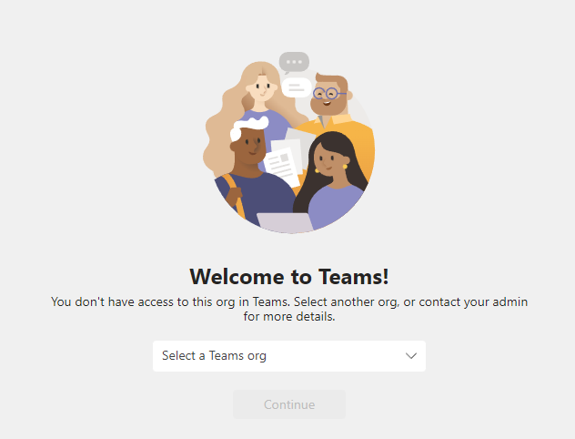

Sorry, this has to be said to help with my emotional well being because Teams has driven me to the depths of despair and this is the only way I can think of to begin some kind of cathartic healing process.
(disclaimer: please take the following rant in the humorous way that it is intended) :innocent:
I work as a freelance consultant for multiple organisations. I also have my own Microsoft account. Every time I am invited to collaborate on a project with a new organisation I have sleepless nights because I know what’s coming. It’s only a matter of time. The dreaded email. Those awful words.
“Let’s connect on Teams”.
So yet again, I have to go through the same process. Click on the link emailed to me. MS assumes I want to join with a different account that I have used for a different org and tries to sign me in with that org. Fails. Offers no way to sign out and to join the actual org that invited me. Sometimes I have managed to sign out, MS says I’m signed out. Click the link again, no actually I wasn’t signed out because EXACTLY the same thing happens. So then I open link in incognito mode. About 50% of the time I manage to actually join the meeting, the other half not, with no explanation of what the problem actually is and we end up moving to Zoom or WebEx. Still got no idea now how to join a meeting without opening in incognito mode.
But that’s just for a one off meeting. If I want to actually join a “Team”, as a guest, it’s 10x worse. Asked to create an account. But then it starts harping on about work vs personal emails. I end up trying from all kinds of different email addresses, emailing the clients back and forth. Usually face all kinds of dead ends. It asks me to install some stupid app. And/or sends verification codes that don’t work, asks for my phone number, and after I’ve handed over all my personal information, my bank details, DNA samples, embarrassing pictures and whatever else it still gleefully denies access.
On some occasions I actually make it into Teams but I can’t see the “Team” I was invited to. Cue more frantic emails with client, client consulting IT department, IT department stumped. After a few hours perhaps we finally get in through randomly exploring every possible combination of emails, settings and any other explanatory variables that come to mind. Having finally cracked the safe, client asks me to look at document X. Discover that I don’t have permission to look at the document (despite it being in the file repository of the team that I’m a member of). Everyone just gives up and moves back to email.
I can only imagine that Teams was invented as some kind of purgatory for our sins. If that’s the case, I can only say that when I die, I will die with a pure soul because I have atoned one hundredfold for the sins of my life, in tears shed and time lost over Microsoft Teams. And what’s more, I will die happy in the knowledge that in the afterlife, whatever it may be, there will be no Teams. I hope.